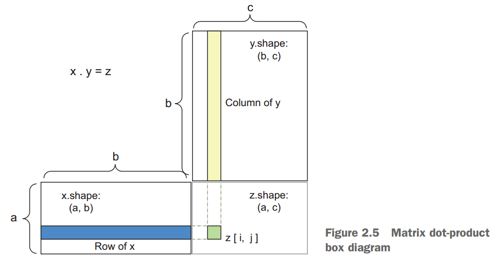
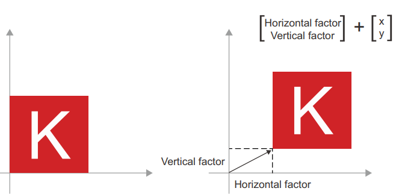
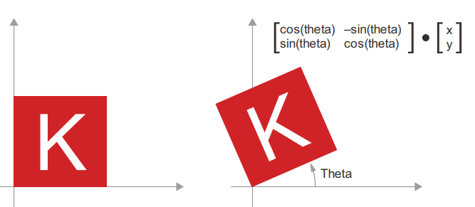
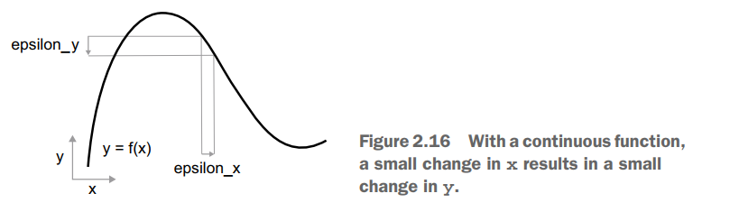

2. Toán cơ bản với DL
2.1. Tensor
Dư liệu đầu vào của mạng neural thần kinh là dữ liệu định dạng mảng, chỉ chứa số và được gọi là tensor. Một tensor có thể có từ 0 đến nhiều chiều khác nhau và có cơ bản các thuộc tính sau:
Số chiều (dimension,
axes)Kích thước của mỗi tensor (
shape) theo từng chiềuĐịnh dạng dữ liệu của mỗi tensor (
float64,float32)
Tensor 0D - Scalars
import numpy as np
x = np.array(1)
x
array(1)
# Số chiều dimension
x.ndim
0
Tensor 1D
y = np.array([1, 2, 3])
y
array([1, 2, 3])
# Số chiều
y.ndim
1
Tensor 2D
x = np.array([[5, 78, 2, 35, 0],
[6, 79, 3, 35, 1],
[7, 80, 4, 36, 2]])
x.ndim
2
Trong ví dụ trên, giá trị [5, 78, 2, 35, 0] đại diện cho dòng (x-axis)
Tensor 3D
x = np.array([[[5, 78, 2, 34, 0],
[6, 79, 3, 35, 1],
[7, 80, 4, 36, 2]],
[[5, 78, 2, 34, 0],
[6, 79, 3, 35, 1],
[7, 80, 4, 36, 2]],
[[5, 78, 2, 34, 0],
[6, 79, 3, 35, 1],
[7, 80, 4, 36, 2]]])
x.ndim
3
x[2]
array([[ 5, 78, 2, 34, 0],
[ 6, 79, 3, 35, 1],
[ 7, 80, 4, 36, 2]])
Tương tự như các tensor 2D, ta có thể tạo ra các tensor 3D, 4D hoặc cao hơn nữa. Định dạng dữ liệu tensor có thể được sử dụng trong các tập dữ liệu khác nhau.
Vector data—2D: (samples, features)
Dữ liệu thời gian - tensor 3D: (samples, timesteps, features)

Dữ liệu ảnh - tensor 4D: (samples, height, width, channels) hoặc (samples, channels, height, width)

Dữ liệu Video — 5D tensors: (samples, frames, height, width, channels) hoặc (samples, frames, channels, height, width)
Dữ liệu thực tế khi đi qua mạng neural
from tensorflow.keras.datasets import mnist
(train_images, train_labels), (test_images, test_labels) = mnist.load_data()
# Số chiều
train_images.ndim
3
# Shape - 60K quan sát, mỗi quan sát có 28x28
train_images.shape
(60000, 28, 28)
# dtype
train_images.dtype
dtype('uint8')
2.2. Các phép toán cơ bản với tensor
Khi thực hiện các phép toán ma trận của tensor, có các phép tính cơ bản sau
Phép tính max với 0: $relu(x) = max(x, 0)$. Ví dụ: $relu(2) = 2$ & $relu(-1) = max(-1, 0) = 0$
Phép $dot(w, x) = \sum_{i=1..n}w_i*x_i$. Ví dụ
$x= [1, 2, 3]$ và $w = [0.2, 0.8, -0.5]$ với $b = 2$. Phép tính dot sẽ như sau:
$$ z = (1 \cdot 0.2) + (2 \cdot 0.8) + (3 \cdot -0.5) + 2 = 2.3 $$
2.2.1. Phép tính từng phần tử (element wise operator)
Element-wise operator (phép toán từng phần tử) là các phép toán được thực hiện trên từng phần tử tương ứng của hai hoặc nhiều mảng (arrays) hoặc ma trận (matrices). Điều này có nghĩa là mỗi phần tử trong mảng đầu tiên sẽ được kết hợp với phần tử tương ứng tại cùng vị trí trong mảng thứ hai (hoặc các mảng khác) để tạo ra kết quả. Các phép toán không phụ thuộc vào nhau. Các toán tử này có thể được tính toán rất nhanh khi thực hiện tính toán đa nhân.
Có ba toán tử chính trong element wise operator là relu, phép cộng và phép nhân ma trận
2.2.2. Phép tính giữa các ma trận khác chiều
Đối với các ma trận khác chiều, khi tính toán có thể mở rộng chiều của các tensor có số chiều nhỏ hơn để phù hợp với các tensor lớn hơn.
Xem ví dụ đơn giản sau
X = np.array([[1,2,3],
[4,5,6],
[7,8,9]])
print(X)
[[1 2 3]
[4 5 6]
[7 8 9]]
# shape X
X.shape
(3, 3)
y = np.array([10, 10, 10])
# Phép tính
X + y
array([[11, 12, 13],
[14, 15, 16],
[17, 18, 19]])
Tuy nhiên, khi số chiều của 1 tensor chưa tương thích với việc mở rộng của cả array, ta sẽ không thể thực hiện được các phép tính toán. Xem ví dụ sau
X + np.array([2, 2])
---------------------------------------------------------------------------
ValueError Traceback (most recent call last)
Cell In[31], line 1
----> 1 X + np.array([2, 2])
ValueError: operands could not be broadcast together with shapes (3,3) (2,)
2.2.3. Phép nhân tensor
Phép nhân vector, cho phép nhân 2 tensor lại và tạo thành 1 tensor mới.
$x(a, b) \times y(b, c) = z(a, c)$

x = np.array([
[1, 2],
[2, 3],
[1, 5]
])
y = np.array([
[1],
[10]
])
print(np.dot(x, y))
[[21]
[32]
[51]]
2.2.4. Thay đổi định dạng tensor
Tensor reshaping là các sắp xếp lại các hàng và cột để về định dạng mong muốn
x = np.array([[1, 2],
[3, 4],
[5, 6]
])
x
array([[1, 2],
[3, 4],
[5, 6]])
# Reshape sang (2, 3)
x.reshape(2, 3)
array([[1, 2, 3],
[4, 5, 6]])
# Reshape sang (1, 6)
x.reshape(1, 6)
array([[1, 2, 3, 4, 5, 6]])
2.3. Ý nghĩa hình học các phép biến đổi tensor
Các phép biến đổi của tensor có thể chuyển đổi sang hình ảnh của các phép biến đổi như sau
Phép cộng tensor: cho phép dịch chuyển đối tượng

Phép nhân ma trận: Có thể tạo thành việc xoay chiều đối tượng hoặc thay đổi tỷ lệ (rescaling)


2.4. Tối ưu hóa
Các phép tính trong neural network để tính toán ra các bộ tham số đều được dựa trên việc tính toán đạo hàm (derivatives). Với hàm đơn biến và liên tục, ta có:
$$f(x + \epsilon) = f(x) + f'(x) \times \epsilon$$

Ý nghĩa: Khi muốn tìm điểm cực tiểu của một hàm, ta có thể đi qua ba bước:
Bắt đầu tại 1 điểm bất kỳ
Tính toán đạo hàm tại điểm đó
Cập nhật tham số mới: W1 = W0 - step * grad(f(W0), W0)
import tensorflow as tf
x = tf.Variable(0.)
with tf.GradientTape() as tape:
y = 2 * x + 3
grad_of_y_wrt_x = tape.gradient(y, x)
print(grad_of_y_wrt_x)
tf.Tensor(2.0, shape=(), dtype=float32)
x = tf.Variable(tf.random.uniform((2, 2)))
with tf.GradientTape() as tape:
y = 2 * x + 3
grad_of_y_wrt_x = tape.gradient(y, x)
print(grad_of_y_wrt_x)
tf.Tensor(
[[2. 2.]
[2. 2.]], shape=(2, 2), dtype=float32)
W = tf.Variable(tf.random.uniform((2, 2)))
b = tf.Variable(tf.zeros((2,)))
x = tf.random.uniform((2, 2))
with tf.GradientTape() as tape:
y = tf.matmul(x, W) + b
grad_of_y_wrt_W_and_b = tape.gradient(y, [W, b])
print(grad_of_y_wrt_W_and_b)
[<tf.Tensor: shape=(2, 2), dtype=float32, numpy=
array([[0.90537345, 0.90537345],
[1.8831768 , 1.8831768 ]], dtype=float32)>, <tf.Tensor: shape=(2,), dtype=float32, numpy=array([2., 2.], dtype=float32)>]